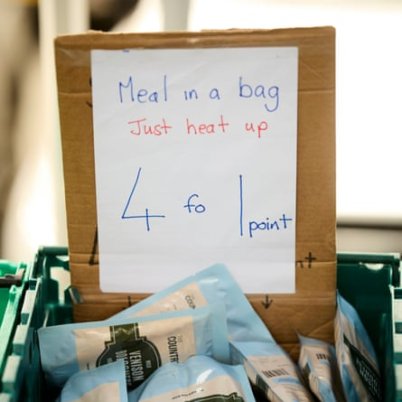

At a baby bank in Liverpool , Louise cradles her infant in her arms, while volunteers pull donations from the shelves and into a bag; nappies, formula milk, vests and baby-grows.
The 38-year-old is a mother of five, her children aged five months to 13 years; two are visually impaired and one also has epilepsy, another of her children is deaf.
Louise is a full-time single parent – and she cannot make ends meet. When her electricity recently ran out, she had to ask three people before she could find someone who was able to lend her the money to keep the lights on.
“It’s so hard now, they’ve cut the benefits, with the cap, it’s just trying to get through, passing clothes down, charity shops, I’ve never bought anything new,” she said.
She is breastfeeding, but medical professionals were concerned that her baby was losing weight, so she had to start supplementary feeding – an additional cost on her food bill.
“Fruit and veg is the worst, trying to keep them nourished,” she said. “I went to look in Tesco to get the SMA [formula] and I had to leave it because it was so dear; it’s choosing whether to get fruit for the other kids, or milk.”
She goes without herself “all the time” and worries a lot, “especially for the future, with everything going higher and higher, electricity and gas are so much, and food”.
She has been referred for help from Babykind, which runs out of the Kindfulness Coffee Club in Bootle, and is sitting with Sarah Davidson, a mental health first aider, who works here.
Fans Supporting Foodbanks is run from a van, so it can move to the areas it is needed.Photograph: Mark Waugh/The Guardian
The families who come through their doors are “doing their best,” Davidson said, “but you can only budget with what you’ve got, and it’s so hard.
“If [the two-child benefit cap] was scrapped, it would just give families a bit more breathing space,” she added, “and then the voluntary sector wouldn’t be as stretched.”
While Davidson is signposting Louise to other organisations that may be able to help her, another mum of three comes in with her child in a pram, desperate for supplies and support.
“This is what it’s like every day,” Davidson said.
The issue played out in parliament last month, when Keir Starmer suspended the whip from seven MPs who had voted in favour of a proposed SNP amendment to the king’s speech – which sets out the government’s legislative agenda – that would have lifted the benefit cap.
The current policy, introduced in 2017 by the Conservative government, prohibits almost all parents from claiming child tax credit or universal credit for more than two children. It has been cited repeatedly as a factor in rising levels of child poverty.
Among the rebels was Ian Byrne, the MP for Liverpool West Derby. He and other suspended MPs will sit as independents.
Kim Johnson, the Labour MP for the neighbouring constituency, Liverpool Riverside, had tabled her own amendment calling for the two-child limit to be scrapped, but it was not selected by the speaker.
She abstained on the SNP amendment, which was defeated by 363 votes to 103. She said she decided not to vote against the government “for unity”, but added: “The massive strength of feeling is undeniable. It must be a priority for our first budget.”
Her decision led to a flurry of criticism online, with detractors accusing her of “hypocrisy” and “cowardice”. But, at the same time, Starmer’s hardline approach to dissent sent shock waves through parliament.
It is clearly an issue where Labour MPs – particularly those representing constituencies with high levels of poverty – are trying to grapple with how to do best for their constituents. While, at the same time, the issue is Starmer’s first real test of leadership.
“I had to put West Derby before party,” Byrne said, telling the Liverpool Echo that 43% of children in the constituency lived in poverty, “and so many are affected by the two-child limit”.
“For my conscience, I had to do what I thought was right,” he added, but said he was “devastated to lose the whip”.
Ian Byrne, MP for Liverpool West Derby, helped set up Fans Supporting Foodbanks.Photograph: Joel Goodman/The Observer
Byrne was one of three founders of Fans Supporting Foodbanks, a joint initiative between supporters of Liverpool and Everton football clubs. It began in 2015, with collecting food in wheelie bins outside pubs on match days, and has grown to feed 2,500 people a week across Merseyside.
This week, his two co-founders, Dave Kelly and Robert Daniels, were at one of their mobile market-style food pantries, near Everton’s Goodison Park stadium.
People who live within designated postcodes can sign up, then come here and select a basket of items for £3.50, including fresh meat, fruit, and vegetables.
Kanku Kuyateh, 38, works as a carer, but she struggles to feed her four children. “It’s extremely difficult,” she said, “the children are like adults, they eat a lot.” The family’s financial situation, she said, “is worrying”.
Marina Repey, 32, has two daughters – and it is a challenge to make ends meet. “It’s very difficult to pay the rent,” she said. “All [our] money goes to the rent and then bills … we don’t have anyone, no parents, no support.”
As the cost of living has increased, demand for their food pantries has soared, Daniels said. And they see many larger families shopping here. The introduction of the two-child benefit cap, he said, put “millions of children in poverty overnight”.
“If you’re someone with two children, the government gives the amount of money that they deem is the bare minimum for you to live off,” he said. “If you’ve got a child over that … the government knows that they’re living in poverty.”
In Daniels’ view, “it should be scrapped” and, on the poverty frontlines in Liverpool, it’s hard to find a dissenting voice.
“It needs to happen and it needs to happen now,” Johnson told the Guardian. She stood by her decision to abstain on the vote, and said the purpose of her amendment was to spark debate, not to create divisions.
But, she added: “Every day that the two-child cap stays in place, more and more families are being subjected to greater levels of poverty, and children are being pushed further and further into poverty.”
“I would say that the dial has moved,” she added. “But the fight goes on.”